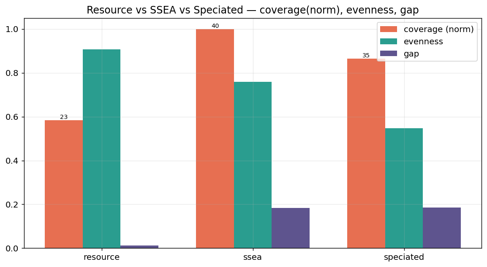
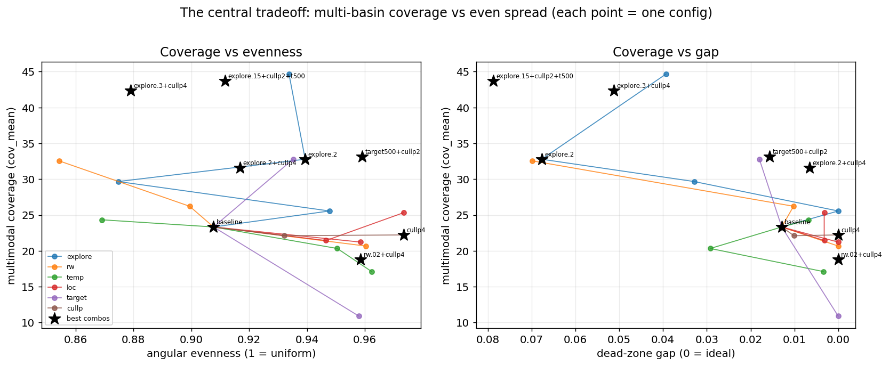
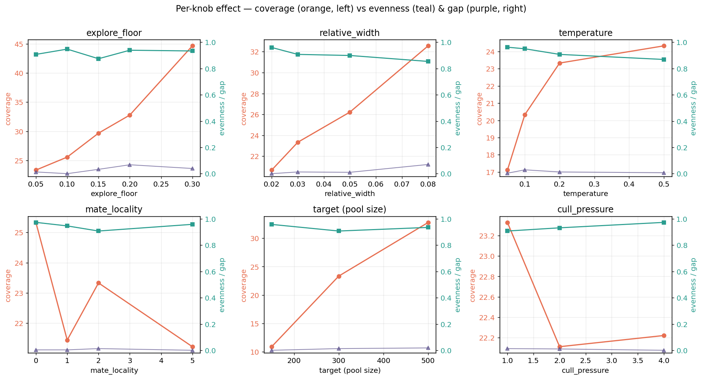
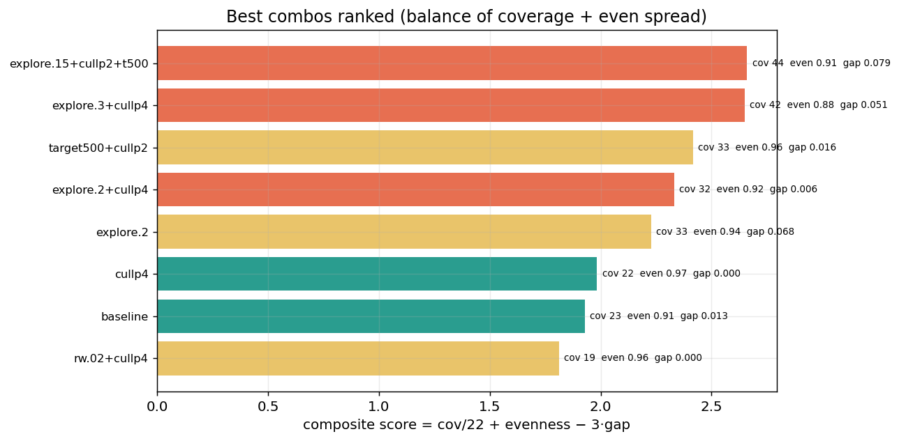

explore_floor restores exploration and cull_pressure=4 tightens the pool while improving evenness. The combo explore_floor=0.2 + cull_pressure=4 recovers ~60% of the lost coverage with the gap still near zero. Two surprises: cull_pressure↑ is a near-free even-spread win, and the tuned mate_locality=2 is actually the worst setting tested.

| method | coverage | gap | evenness | on-ring |
|---|---|---|---|---|
| Resource (fitness sharing) | 23.3 | 0.013 | 0.908 | 121 |
| SSEA (kNN-novelty) | 40.0 | 0.183 | 0.759 | 98 |
| Speciated (novelty + mating) | 34.6 | 0.186 | 0.548 | 61 |
Why Resource spreads evenly and the others clump — confirmed by data. Resource's crowding term sums every neighbour within σ, so density is penalised continuously. SSEA's kNN-novelty saturates — only the k nearest count, so a dense clump of >k looks no less novel than exactly k — and it clumps (evenness 0.76, gap 18%). Speciated's assortative mating actively concentrates breeding inside clusters, clumping the most (evenness 0.55, only 61 on-ring). On the flip side, SSEA's churn explores more basins (coverage 40 vs Resource 23): the strengths are mirror images.
Use which? Resource for uniform, gap-free coverage of a known structure (manifold/ring sampling). SSEA when raw multimodal exploration matters most. Speciated only when you explicitly need tight, separated species downstream — it's otherwise dominated here.

Every config plotted as coverage (y) against evenness (left) and gap (right). The frontier is real: pushing coverage up generally costs evenness/gap — but the black-star "best combos" sit above the single-knob curves, i.e. combining knobs beats tuning any one. The top-right region (high coverage and high evenness) is reachable only by stacking explore_floor (coverage) with cull_pressure (gap/evenness).
| knob | what it controls | raising it → | best lever for | recommended |
|---|---|---|---|---|
target | pool size (carrying capacity) | more coverage & more on-ring, ≈linear; the soft cull still holds the pool to ±1% | coverage | 300 (500 coverage-first) |
relative_width (σ) | sharing radius = niche width | coarser niches → less even, more coverage & bigger gap; lowering it → finer, more even spread | even spread (keep low) | 0.03 (0.02 max-even) |
temperature | Boltzmann selection sharpness | softer selection → more coverage, but fewer on-ring & less even; lowering → tighter on the ring + more even | on-ring concentration (keep low) | 0.1–0.2 |
mate_locality | assortative-mating strength | no benefit here — crowding already empties the gap; 2.0 is the worst point tested | — (leave off) | 0 |
explore_floor | floor on random injection | large coverage gain (+92% at 0.30) for a small gap cost — the lever that undoes the soft cull's exploitation | coverage recovery | 0.2 (balanced) |
cull_pressure | pool-tightness exponent | tighter, less-churning pool → more even, gap→0, for ~5% coverage cost — a near-free even-spread win | even spread (near-free) | 4 |
Rule of thumb: target + explore_floor push coverage; relative_width↓, temperature↓, cull_pressure↑ push even spread; mate_locality does nothing useful on this landscape.

Orange = coverage (left axis); teal = evenness, purple = gap (right axis).
| floor | cov | gap | even |
|---|---|---|---|
| 0.05 | 23.3 | 0.013 | 0.908 |
| 0.10 | 25.6 | 0.000 | 0.948 |
| 0.20 | 32.8 | 0.068 | 0.939 |
| 0.30 | 44.7 | 0.039 | 0.934 |
Raising it restores coverage +92% (mostly rastrigin & griewank) with evenness staying high (0.87–0.95). The exploration the soft cull removed, handed back explicitly.
| k | pool spread | gap | even | cov |
|---|---|---|---|---|
| 1 | 60 | 0.013 | 0.908 | 23.3 |
| 2 | 42 | 0.010 | 0.932 | 22.1 |
| 4 | 37 | 0.000 | 0.973 | 22.2 |
Steeper restoring force → tighter pool (spread 60→37), and a fuller, less-churning pool resolves niches more finely: evenness 0.91→0.97, gap→0, for only ~5% coverage cost.
| rw | even | cov | gap |
|---|---|---|---|
| 0.02 | 0.960 | 20.7 | 0.000 |
| 0.03 | 0.908 | 23.3 | 0.013 |
| 0.05 | 0.899 | 26.2 | 0.010 |
| 0.08 | 0.854 | 32.6 | 0.070 |
Smaller σ → finer niches → more even (0.96 at 0.02) but less coverage. 0.03 stays the balanced pick; 0.02 only if max evenness/zero gap is the sole goal.
| loc | gap | even | cov |
|---|---|---|---|
| 0 | 0.003 | 0.974 | 25.3 |
| 1 | 0.003 | 0.947 | 21.4 |
| 2 (tuned) | 0.013 | 0.908 | 23.3 |
| 5 | 0.000 | 0.959 | 21.2 |
The tuned 2.0 is the sweep's pessimum on every axis. Crowding already empties the gap, so assortative mating adds nothing here — locality 0 dominates (evenness 0.97, best coverage).
| temp | on-ring | even | cov |
|---|---|---|---|
| 0.05 | 132 | 0.962 | 17.1 |
| 0.10 | 145 | 0.951 | 20.3 |
| 0.20 | 121 | 0.908 | 23.3 |
| 0.50 | 99 | 0.869 | 24.3 |
Lower temp → tighter on the ring + more even, less coverage. 0.10 maximises on-ring (145); 0.20–0.50 trades that for coverage.
| target | pool (min–max) | cov | even |
|---|---|---|---|
| 150 | 149 (130–169) | 10.9 | 0.958 |
| 300 | 301 (271–331) | 23.3 | 0.908 |
| 500 | 498 (465–533) | 32.8 | 0.935 |
The soft cull holds the pool within ~1% of target at every size. Bigger pool ≈ linearly more coverage (≈3× from 150→500) and more on-ring; gap stays <0.02. Cost is compute.

| combo | coverage | gap | evenness | score |
|---|---|---|---|---|
| explore.15 + cullp2 + t500 | 43.7 | 0.079 | 0.912 | 2.66 |
| explore.3 + cullp4 | 42.3 | 0.051 | 0.879 | 2.65 |
| target500 + cullp2 | 33.1 | 0.016 | 0.959 | 2.42 |
| explore.2 + cullp4 balanced | 31.6 | 0.006 | 0.917 | 2.33 |
| cullp4 even-spread | 22.2 | 0.000 | 0.974 | 1.98 |
| baseline | 23.3 | 0.013 | 0.908 | 1.93 |
Composite score = cov/22 + evenness − 3·gap. The key result: raising explore_floor recovers coverage, and adding cull_pressure=4 on top cuts the resulting gap ~10× (0.068→0.006) at ~1 coverage point — the two knobs are complementary, not competing.
relative_width=0.03mate_locality=0explore_floor=0.2cull_pressure=4temperature=0.2, target=300relative_width=0.03 (or 0.02)mate_locality=0explore_floor=0.05cull_pressure=4temperature=0.1, target=300All three profiles ship as presets on the CreateInfo: ResourceSoftStochasticInfo::balanced(), ::even_spread(), ::coverage() (a larger-pool coverage-first profile). Override the seed with { seed, ..balanced() }.
explore_floor buys coverage; cull_pressure buys evenness+gap; together they reach configs neither reaches alone.mate_locality → 0 (the tuned 2.0 is the worst point), and adopt cull_pressure = 4 (a near-free even-spread gain). Add explore_floor ≈ 0.2 if multi-basin coverage matters for your use case.evors-bench/examples/analysis_sweep.rs; charts via scripts/analysis_plot.py;
raw data in data/analysis/*.csv. Coverage uses 3 seeds × 12k evals on ackley/rastrigin/griewank; two-circles metrics from a 30k-eval run.
Numbers are single-run estimates (seeds where noted) — directional, not high-precision.